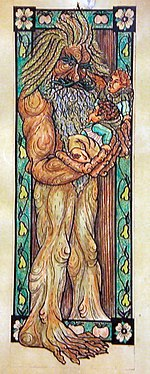

Bárbol
Personaje de El Señor de los Anillos
Ilustración de Bárbol con los hobbits Merry y Pippin en sus manos
| Creador(es) | J. R. R. Tolkien |
|---|---|
| Capitulo(s) | «Bárbol» «El caballero blanco» «El camino de Isengard» «Restos y despojos» «La voz de Saruman» «El Palantir» «Numerosas separaciones» |
Información
| Nombre original | Treebeard |
|---|---|
| Alias | Fangorn (en sindarin) |
| Raza | Ent |
| Sexo | Masculino |
| Edad | Desconocida |
| Estatura | 4,68 m (15 ft 4 in) |
| Titulo | Guardián de Fangorn Custodiador de Isengard |
| Pareja(s) | Fimbrethil |
| Residencia | Fangorn (Tierra Media) |